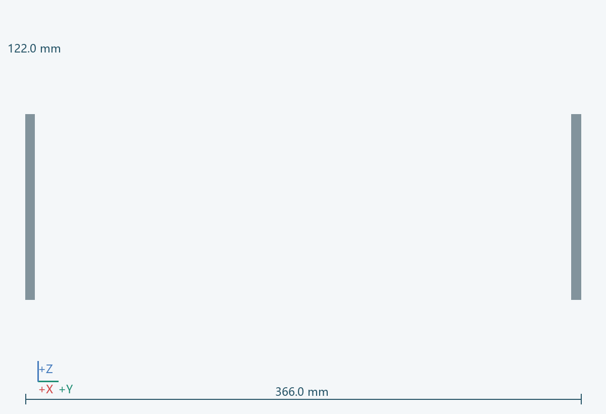
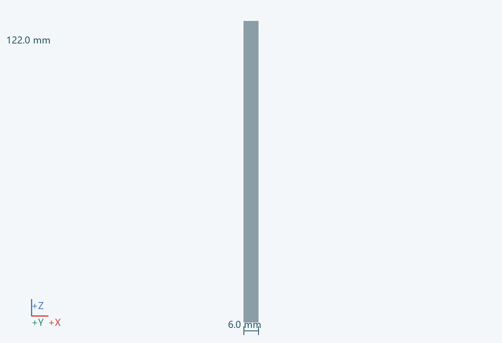

几何包络
6.0 × 366.0 × 122.0 mm（含所示实例）
功能
隔离轮组、传动和夹点，同时给羽毛球保留出口。
连接 / 基准
连接 0501；与 0802 检查窗、0905 开盖检测协同；出球通道按扫掠区开口。
材料 / 工艺
金属内护件与耐冲击外罩候选
拆装
可拆上盖与侧盖；维护前停机并确认轮停转。
待验证
仅凭塑料厚度不能宣称可承受高速失效碎片；防护材料、连接与验证另行完成。 关联：U07/U09
实例
PRT-0801-D__L, PRT-0801-D__R